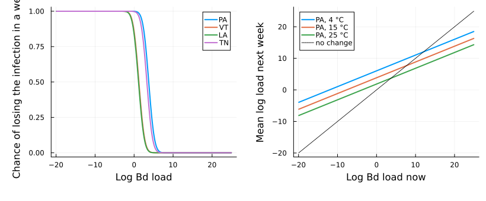
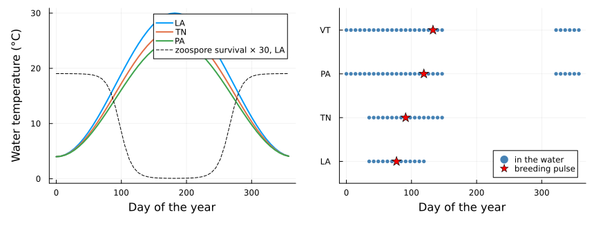
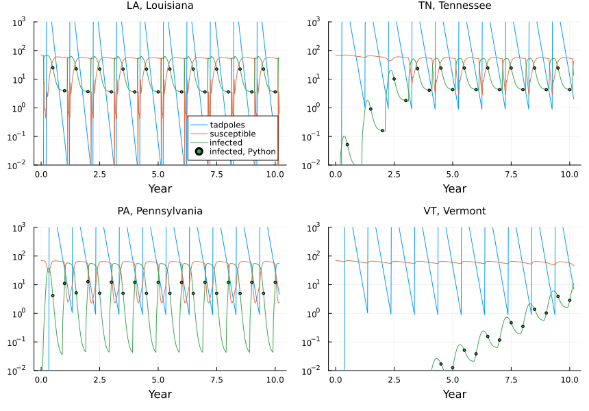
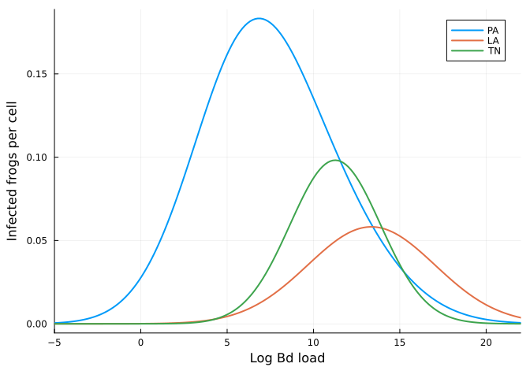

Chytrid fungus in leopard frogs: a host-parasite IPM with seasons and a zoospore pool
Simon Frost
- Bd load as the continuous trait
- A frog’s week
- Zoospores in the water
- Seasons
- Ten years at four locations
- Persistence with demographic stochasticity
- What is measured and what is assumed
- Where this model and its sources part
- Sources read
- References
ENV["GKSwstype"] = "100"
using MatrixCommunityModels
using LinearAlgebra, Printf, Random, Statistics
using Plots
BLAS.set_num_threads(1)Bd load as the continuous trait
The chytrid fungus Batrachochytrium dendrobatidis (Bd) infects the skin of amphibians and has driven many species to decline. Whether an infection grows or is cleared depends on how many zoospores a frog carries, its Bd load. Wilber et al. (2016) therefore wrote the infected hosts of a host-parasite model as an integral projection model whose continuous trait is the logarithm of the load, rather than as one infected class. Wilber, Ohmer, Altman et al. (2022) applied such a model to leopard frogs at four locations in the United States, with seasons: temperature changes how fast Bd grows and how long zoospores survive in the water, and frogs meet zoospores only while they are in the water to breed or, in the north, to overwinter.
The paper fits a reduced IPM, which follows the mean and spread of the load distribution, to field data, and uses the equivalent full IPM, in which the load distribution is a mesh, for the simulations with demographic stochasticity. This vignette builds the full IPM from the package’s vocabulary and checks it against the authors’ Python code (fullmodel.py and ccssimulation.py, run by test/reference/python/run_bd_reference.py). The values of the fitted parameters are the medians of the authors’ posterior samples, which their code loads in the same way.
| Location | Host | Model fitted | Water temperature (°C) |
|---|---|---|---|
| PA, Pennsylvania | northern leopard frog, Rana pipiens | Bd growth depends on temperature | 4 to 25 |
| VT, Vermont | northern leopard frog | Bd growth depends on temperature | 4 to 25 |
| LA, Louisiana | southern leopard frog, R. sphenocephala | Bd growth and transmission depend on temperature | 4 to 30 |
| TN, Tennessee | southern leopard frog | Bd growth depends on temperature | 4 to 27 |
A frog’s week
The time step is seven days and a year is 52 steps (364 days). The host has three kinds of stages: tadpoles, uninfected (susceptible) post-metamorphic frogs, and infected frogs by the natural logarithm of their load, from -20 to 25 in 300 cells, as in the authors’ simulations:
load = chytrid_load_stage()
s = CHYTRID_SITES.PA
(cells = length(load), cell_width = step_size(load), first_cells = stage_names(load)[1:3])(cells = 300, cell_width = 0.15, first_cells = [:load1, :load2, :load3])leopard_frog writes the life cycle as a net over [:tadpole, :susceptible, load]. Its transitions are those of the authors’ transition matrix, each named:
life = kernel_net([:tadpole, :susceptible, load],
:developing => [(:tadpole => :tadpole) => tadpole_survival * (1 - metamorphosis)],
:metamorphosing => [(:tadpole => :susceptible) => tadpole_survival * metamorphosis],
:escaping => [(:susceptible => :susceptible) => s0],
:infecting => [(:susceptible => :load) => responsive(ctx -> (y -> s0 * in_cell(y, start_load(ctx))))],
:growing => [(:load => :load) =>
responsive(ctx -> ((y, x) -> sI * s0 * (1 - losing(x)) * in_cell(y, start_load(ctx) + b * x)))],
:clearing => [(:load => :susceptible) => x -> sI * s0 * losing(x)],
:breeding => [(:susceptible => :tadpole) => fecundity, (:load => :tadpole) => x -> fecundity])
net = births(respond(life,
:metamorphosing => damping, # exp(-e^K N / area), N the frogs pool
:escaping => ctx -> 1 - infection(ctx),
:infecting => infection, # 1 - exp(-β exp(β_T (T - 15)) Z / area), in the water
:breeding => ctx -> breeding_now(ctx.env.day) ? 1.0 : 0.0), :breeding)- A tadpole survives a week with chance $0.2^{7/\text{larval period}}$, so that a fifth survive the larval period, and metamorphoses with chance $7/\text{larval period}$. The metamorphs are damped by $e^{-e^K N/\text{area}}$, $N$ being the post-metamorphic frogs.
- A susceptible frog survives with chance $s_0 = 0.995$ and, in the water, is infected with a chance that rises with the zoospores in the pool. A new infection starts at a log load drawn from a normal distribution with mean $a + a_T (T - 15)$.
- An infected frog of log load $x$ loses its infection with chance $1 - \Phi((x - \mu_l)/\sigma_l)$, or keeps it and has a log load next week that is normal with mean $a + a_T (T - 15) + b x$ and standard deviation $\sigma$. Bd grows faster in cold water ($a_T < 0$).
- Once a year, in the middle of the breeding season, every post-metamorphic frog produces 600 tadpoles.
The load kernels are responsive: their shape depends on the temperature of the week, read from the environment, so they are rebuilt each step. As in the authors’ code they are integrated over each cell of the next load (in_cell is a difference of normal distribution functions divided by the cell width), not evaluated at its middle.
x = meshpoints(load)
Φ(u) = MatrixCommunityModels._normal_cdf(u) # the standard normal distribution function
losing(x, s) = 1 - Φ((x - s.mu_l) / s.sigma_l)
p1 = plot(; xlabel = "Log Bd load", ylabel = "Chance of losing the infection in a week", legend = :topright)
for site in (:PA, :VT, :LA, :TN)
plot!(p1, x, losing.(x, Ref(CHYTRID_SITES[site])); lw = 2, label = String(site))
end
p2 = plot(; xlabel = "Log Bd load now", ylabel = "Mean log load next week", legend = :topleft)
for T in (4.0, 15.0, 25.0)
plot!(p2, x, s.a .+ s.a_temp * (T - 15) .+ s.b .* x; lw = 2, label = "PA, $(Int(T)) °C")
end
plot!(p2, x, x; color = :black, ls = :dot, label = "no change")
plot(p1, p2; layout = (1, 2), size = (820, 340), bottom_margin = 5Plots.mm, left_margin = 5Plots.mm)
With $b = 0.5$ the load does not grow without bound: it settles where the mean next week equals the load now, at $2(a + a_T(T - 15))$, about 12 in Pennsylvania at 4 °C and 3.7 at 25 °C, with a spread of $\sigma$ around it. The chance of losing the infection is high below $\mu_l$, which differs between the locations.
Zoospores in the water
Infected frogs in the water shed $\lambda e^x$ zoospores a week each, and zoospores survive a week with a chance that falls with temperature. The authors fit this curve to the decay rates of zoospores at 4, 14.5, 23 and 28 °C that they attribute to Woodhams et al. (2008). The zoospores are a component of their own, chytrid_zoospores, with one stage; the frogs and the zoospores are joined by two pools:
shedding: the zoospores shed by the frogs in the week, which the zoospore component takes in as an inflow;zoospores: the zoospores in the water, which the frogs read to know their chance of infection.
pool = respond(ValuedProjectionNet([:zoospores], :surviving => [(:zoospores => :zoospores) => 1.0]),
:surviving => ctx -> alive(ctx.env.temperature))
pool = inflow(pool, :zoospores => ctx -> ctx.pool.shedding)
species(:zoospores, pool; occupies = [:zoospores => [:zoospores => 1.0]], reads = [:shedding])The frog contributes its post-metamorphic frogs to a third pool, frogs, which damps its own recruitment. chytrid_community composes the two:
c = chytrid_community(:PA; area = 500.0)
(species = species_names(c), pools = pool_names(c), stages = length(c))(species = [:frog, :zoospores], pools = [:frogs, :shedding, :zoospores], stages = 303)No frog refers to the zoospores directly, so a second host is composed the same way: give it its own crowding pool and it shares the zoospores and the shedding with the first (see leopard_frog).
Seasons
Temperature follows a sinusoid from its minimum on day 0 to its maximum half a year later. Post-metamorphic frogs are in the water during the breeding season and, in Pennsylvania and Vermont, while they hibernate in the water from mid-November; they meet and shed zoospores only then. The breeding pulse falls in the week that holds the middle of the breeding season.
days = 0:7:357
in_water(site, d) = MatrixCommunityModels._chytrid_in_water(CHYTRID_SITES[site], d)
breeds(site, d) = MatrixCommunityModels._chytrid_breeding_now(CHYTRID_SITES[site], d)
p1 = plot(; xlabel = "Day of the year", ylabel = "Water temperature (°C)", legend = :topright)
for site in (:LA, :TN, :PA)
plot!(p1, days, chytrid_temperature.(site, days); lw = 2, label = String(site))
end
plot!(p1, days, [CHYTRID_ZOOSPORE_SURVIVAL.maxsurv / (1 + exp((chytrid_temperature(:LA, d) - CHYTRID_ZOOSPORE_SURVIVAL.ld50) /
CHYTRID_ZOOSPORE_SURVIVAL.s)) * 30 for d in days]; color = :black, ls = :dash, label = "zoospore survival × 30, LA")
sites = (:LA, :TN, :PA, :VT)
p2 = plot(; xlabel = "Day of the year", yticks = (1:4, String.(collect(sites))), ylims = (0.5, 4.5), legend = :bottomright)
for (i, site) in enumerate(sites)
w = [in_water(site, d) for d in days]
scatter!(p2, days[w], fill(i, count(w)); color = :steelblue, ms = 3, markerstrokewidth = 0, label = i == 1 ? "in the water" : "")
scatter!(p2, [d for d in days if breeds(site, d)], [i]; color = :red, marker = :star5, ms = 7, label = i == 1 ? "breeding pulse" : "")
end
plot(p1, p2; layout = (1, 2), size = (860, 340), bottom_margin = 5Plots.mm, left_margin = 4Plots.mm)
Ten years at four locations
The authors’ simulations start each location with 0.14 post-metamorphic frogs per m³ (their high density), in an arena of 500 m³ here, no infected frogs, and 10,000 zoospores, and run for 530 weeks. The same start and the same environments in this package:
ref_dir = joinpath(pkgdir(MatrixCommunityModels), "test", "reference")
reference(file) = [split(l, ",") for l in readlines(joinpath(ref_dir, file))[2:end]]
number(x) = parse(Float64, x)
theirs = reference("chytrid_runs.csv")
start(c) = state_vector(c, :frog => vcat([0.0, 70.0], zeros(300)), :zoospores => [10_000.0])
runs = Dict{Symbol, Any}()
for site in sites
c = chytrid_community(site; area = 500.0)
runs[site] = (community = c, sol = project(c, start(c), chytrid_environment(site, 529)))
end
years = (0:529) ./ 52
panels = map(sites) do site
sol = runs[site].sol
frog = sol[:frog]
p = plot(; title = "$(site), $(CHYTRID_SITES[site].location)", titlefontsize = 10, yscale = :log10,
ylims = (1e-2, 1e3), xlabel = "Year", legend = site == :LA ? :bottomright : false)
plot!(p, years, max.(frog[:, 1], 1e-3); label = "tadpoles", color = 1)
plot!(p, years, max.(frog[:, 2], 1e-3); label = "susceptible", color = 2)
plot!(p, years, max.(vec(sum(frog[:, 3:end]; dims = 2)), 1e-3); label = "infected", color = 3)
r = [t for t in theirs if t[1] == String(site) && parse(Int, t[2]) % 26 == 0]
scatter!(p, parse.(Int, getindex.(r, 2)) ./ 52, max.(number.(getindex.(r, 6)), 1e-3); color = 3, ms = 2,
label = "infected, Python")
p
end
plot(panels...; layout = (2, 2), size = (860, 600))
The lines are this package and the points the authors’ code. In Pennsylvania and Louisiana infection settles into a yearly cycle within about three years; in Tennessee it takes four to five years to build up from the few frogs infected in the first spring; in Vermont, with a transmission rate a hundred to a thousand times smaller than elsewhere, it is still rising after ten.
function apart(site)
sol = runs[site].sol
frog, z = sol[:frog], sol[:zoospores]
worst = 0.0
for t in theirs
t[1] == String(site) || continue
k = parse(Int, t[2]) + 1
mine = (frog[k, 1], frog[k, 2], sum(frog[k, 3:end]), z[k, 1])
worst = max(worst, maximum(abs(m - number(v)) / max(abs(number(v)), 1e-300) for (m, v) in zip(mine, t[4:7])))
end
return worst
end
states = reference("chytrid_states.csv")
function apart_states(site)
sol = runs[site].sol
maximum(begin
v = number.(t[3:end]); k = parse(Int, t[2]) + 1
maximum(abs.(vcat(sol[:frog][k, :], sol[:zoospores][k, 1]) .- v)) / maximum(abs, v)
end for t in states if t[1] == String(site))
end
for site in sites
@printf("%s: totals (tadpoles, susceptible, infected, zoospores) %.1e; whole state at 7 saved steps %.1e\n",
site, apart(site), apart_states(site))
endLA: totals (tadpoles, susceptible, infected, zoospores) 7.9e-12; whole state at 7 saved steps 2.0e-13
TN: totals (tadpoles, susceptible, infected, zoospores) 6.6e-12; whole state at 7 saved steps 3.6e-13
PA: totals (tadpoles, susceptible, infected, zoospores) 2.2e-12; whole state at 7 saved steps 1.0e-13
VT: totals (tadpoles, susceptible, infected, zoospores) 1.7e-12; whole state at 7 saved steps 1.6e-12Over 529 weeks the numbers of tadpoles, susceptible and infected frogs and zoospores agree with the authors’ code to about 1e-11 relative, and the whole state (302 stages and the zoospores) to about 1e-12 of its largest entry. The remaining difference is rounding, and the normal distribution function used here, which is accurate to 2e-16 absolute.
The load distribution of the infected frogs at the start of the eleventh year (day 3640, the coldest day):
k = 520 + 1
plot(; xlabel = "Log Bd load", ylabel = "Infected frogs per cell", legend = :topright, xlims = (-5, 22))
for site in (:PA, :LA, :TN)
plot!(x, runs[site].sol[:frog][k, 3:end]; lw = 2, label = String(site))
end
plot!()
Persistence with demographic stochasticity
The question of the paper is whether leopard frogs alone can maintain Bd, without the other amphibians that share their ponds. With whole frogs and zoospores, an infection can die out by chance. The authors ran the full IPM with demographic stochasticity for ten years (522 weeks) from the end of a deterministic run, without the outside source of zoospores, and counted the runs in which infected frogs or zoospores remained: Louisiana kept Bd in 76% of 500 runs with 70 frogs (500 m³), Tennessee in 22% and Pennsylvania in none.
project with a random number generator runs the same community with demographic stochasticity: each frog survives and moves according to a draw from its column of the survival matrix, and births, the zoospores shed and the surviving zoospores are drawn too, as in the authors’ stochastic update. A smaller version of their experiment, 30 runs for each location at 70 frogs:
function persists(site, rng; area = 500.0)
c = runs[site].community
settled = runs[site].sol.u[end, :] # the end of the deterministic run
frog = settled[c.layout[:frog]]
infected = frog[3:end]
total = round(Int, sum(infected))
drawn = zeros(length(infected))
if total > 0 # a multinomial draw of the infected frogs over the loads
for _ in 1:total
u, j = rand(rng) * sum(infected), 1
while u > infected[j] && j < length(infected)
u -= infected[j]; j += 1
end
drawn[j] += 1
end
end
n0 = state_vector(c, :frog => vcat(ceil.(frog[1:2]), drawn),
:zoospores => [ceil(settled[c.layout[:zoospores]][1])])
sol = project(c, n0, chytrid_environment(site, 522; start = 7 * 529); rng)
return sum(sol[:frog][end, 3:end]) > 0 || sol[:zoospores][end, 1] > 0
end
rng = Xoshiro(2022)
repeats = 30
kept = Dict(site => mean(persists(site, rng) for _ in 1:repeats) for site in (:LA, :TN, :PA))
published = Dict(:LA => 0.76, :TN => 0.224, :PA => 0.0)
for site in (:LA, :TN, :PA)
@printf("%s: Bd kept for ten years in %4.0f%% of %d runs (authors: %3.0f%% of 500)\n", site, 100kept[site], repeats,
100published[site])
endLA: Bd kept for ten years in 77% of 30 runs (authors: 76% of 500)
TN: Bd kept for ten years in 27% of 30 runs (authors: 22% of 500)
PA: Bd kept for ten years in 0% of 30 runs (authors: 0% of 500)The stochastic runs here use another random number generator, so they agree with the authors’ only in distribution; with 30 runs a share is known to about ±15 percentage points. The shares here are within that of the authors’ at all three locations: Louisiana, where the fitted Bd growth and transmission are highest, keeps Bd most often, and Pennsylvania loses it in every run.
What is measured and what is assumed
| Quantity | Source |
|---|---|
| $a$, $a_T$, $\sigma$, $\mu_l$, $\beta$ (and $\beta_T$ for LA) | medians of the posterior of the reduced IPM fitted by the authors to field surveys at each location (their pickled MCMC results) |
| Survival of uninfected frogs $s_0 = 0.995$ a week, relative survival of infected frogs $s_I = 1$ | fixed in the authors’ parameter files; $s_I = 1$ is their baseline (the paper also tries 0.97) |
| $b = 0.5$, $\sigma_l = 1.15$, shedding $\lambda = 1$, 600 tadpoles per frog | fixed in the authors’ parameter files |
| $K = 4$ (recruitment damped by $e^{-e^4 N/\text{area}}$) | the authors’ highest of three density assumptions; the paper gives densities of 0.14, 0.002 and 0.0003 hosts per m³ |
| 20% survival over the larval period; larval periods of 57 and 90 days | assumed in the authors’ code; larval periods from their field observations and the literature |
| Breeding and hibernation windows | the authors’ parameter files, from their field observations |
| Zoospore survival by temperature | fitted by the authors’ code to decay rates attributed to Woodhams et al. (2008) |
| Sinusoidal water temperature, minimum and maximum by location | the authors’ simulation code; the paper fits with measured temperatures |
| Arena of 500 m³ with 70 frogs and 10,000 zoospores at the start | one of the settings of the authors’ persistence simulations |
Where this model and its sources part
- The model is the authors’ full IPM as their code runs it for the persistence analysis, not the reduced IPM that the paper fits and uses for $R_0$. The full IPM is described in the paper’s Appendix S2, which could not be read; its equations here are those of
full_model.py. - In the full IPM the starting load of a new infection has the mean $a$ of the growth function (
_init_inf_fxnusesgrowth_fxn_inter); the reduced IPM has a separate parameter $\mu_0$, which the authors’ code sets equal to $a$. - The middle of the breeding season is computed with a 365-day year (
get_repro_time) while the model year has 364 days. It matters only for a season that wraps round the end of the year, which none does. - The external source of zoospores, $\omega$, which stands for the other amphibians at each site in the fits, is not in the full IPM; the persistence analysis sets it to zero.
- Vermont was left out of the paper’s $R_0$ and persistence analyses; its temperature range here, 4 to 25 °C, is the one the authors’ notebook uses for it.
- Tadpoles are never infected, as in the paper, where none of 45 sampled tadpoles carried Bd.
- The repository of the authors’ code carries no licence file, and its Zenodo record gives the licence only as “other-open”. Its code is therefore not copied here; the parameter values are facts, cited, and the code is run only to produce the reference (
test/reference/python/run_bd_reference.py, which reads it from a clone).
Sources read
The authors’ code was read in full: full_model.py, ccs_simulation.py, the parts of reduced_model.py the full model uses (get_repro_time), the parameter files of the four locations and the cells of model_analysis.ipynb that set up the models; their pickled MCMC results and persistence results were read with a loader that accepts only numpy arrays. Wilber et al. (2022) was read in its main text, Table 1 and figure legends (the author manuscript in PubMed Central); its appendices, which describe the full IPM, could not be retrieved. Wilber et al. (2016) was read in full (author manuscript), without its supplement; it describes the IPM approach for another frog, Rana muscosa, with a three-day step. Woodhams et al. (2008) was not read.
References
Wilber, M. Q., Langwig, K. E., Kilpatrick, A. M., McCallum, H. I. & Briggs, C. J. (2016). Integral projection models for host-parasite systems with an application to amphibian chytrid fungus. Methods in Ecology and Evolution 7, 1182-1194. https://doi.org/10.1111/2041-210X.12561
Wilber, M. Q., Ohmer, M. E. B., Altman, K. A., Brannelly, L. A., LaBumbard, B. C., Le Sage, E. H., McDonnell, N. B., Muñiz Torres, A. Y., Nordheim, C. L., Pfab, F., Richards-Zawacki, C. L., Rollins-Smith, L. A., Saenz, V., Voyles, J., Wetzel, D. P., Woodhams, D. C. & Briggs, C. J. (2022). Once a reservoir, always a reservoir? Seasonality affects the pathogen maintenance potential of amphibian hosts. Ecology 103, e3759. https://doi.org/10.1002/ecy.3759
Wilber, M. Q. (2022). mqwilber/bd_seasonality: Code for amphibian-Bd seasonality analysis (v1.0.0). Zenodo. https://doi.org/10.5281/zenodo.6407088
Woodhams, D. C., Alford, R. A., Briggs, C. J., Johnson, M. & Rollins-Smith, L. A. (2008). Life-history trade-offs influence disease in changing climates: strategies of an amphibian pathogen. Ecology 89, 1627-1639.